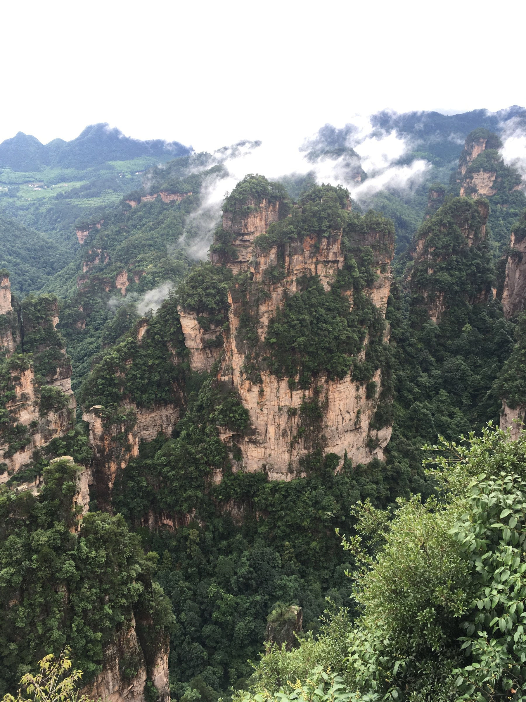
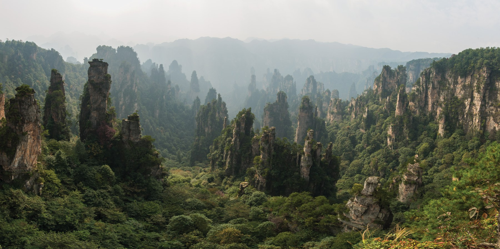
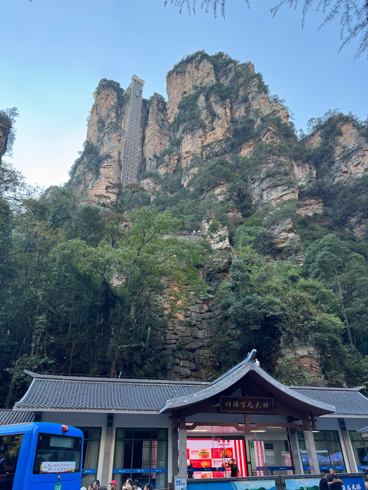
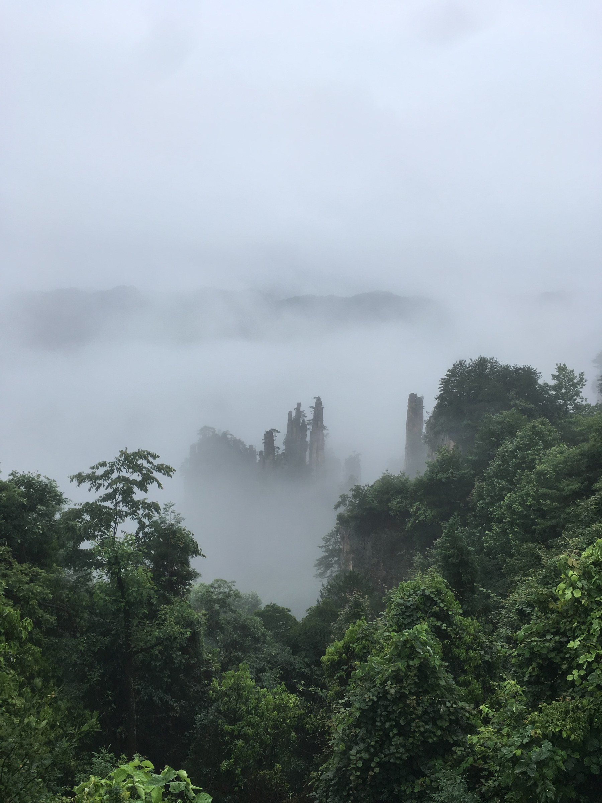
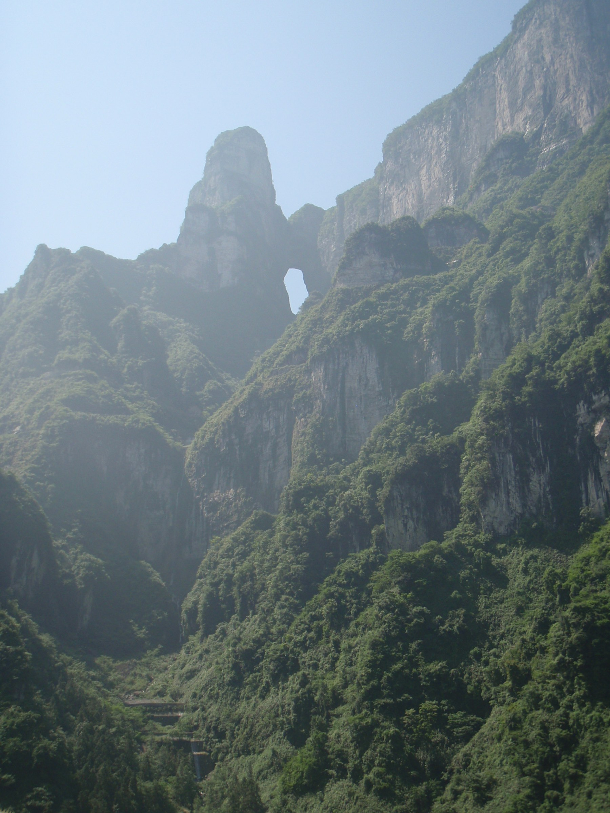
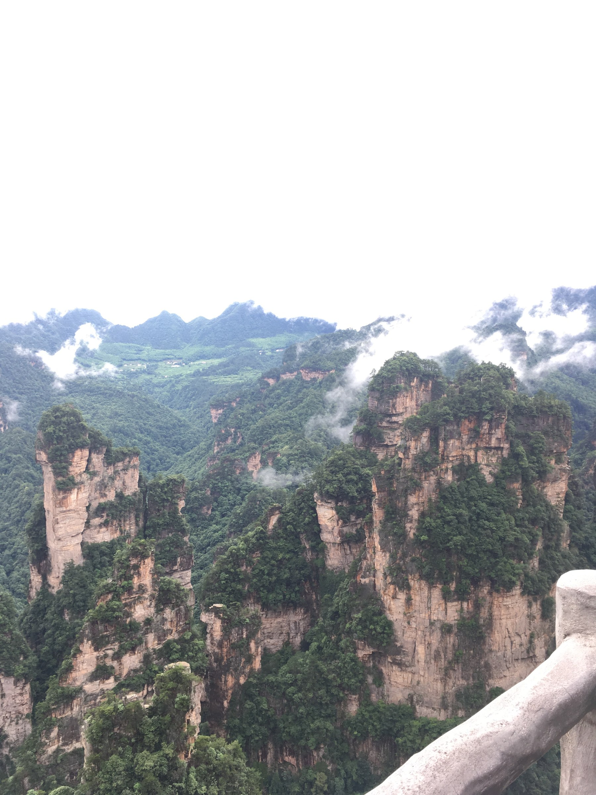

它不是普通“爬一座山”
武陵源看的是成片石英砂岩峰柱，袁家界和天子山负责高台峰林，金鞭溪负责谷底仰视，天门山再补天门洞和高空索道。视角有明显变化，不是同一种山景反复打卡。
佛山/广州 → 张家界西 → 武陵源 → 百龙天梯 → 袁家界 → 天子山 → 金鞭溪轻量段 → 张家界市区 → 天门山 → 广州/佛山。
这条线不是“默认让所有旅行都爬山”，而是单独保留的一条震撼山岳路线。用环保车、百龙天梯、天子山索道和天门山索道降低爬升，但台阶、排队和景区转场仍然存在。
武陵源看的是成片石英砂岩峰柱，袁家界和天子山负责高台峰林，金鞭溪负责谷底仰视，天门山再补天门洞和高空索道。视角有明显变化，不是同一种山景反复打卡。
D2仍有观景台间步行、台阶和旺季排队；雨雾可能遮住峰林。膝盖不适时应删杨家界、缩短金鞭溪，并在天门山放弃999级台阶。
跨城和进出站以12306、高德实际导航为准；景区内部班车会按天气、人流调整，页面给的是执行骨架，不替代当天官方调度。
路线：佛山 → 广州南 → 张家界西
今晚：武陵源东门｜第1/3晚
关键：晚到不摸黑赶山路
强度：正常 ★★
路线：百龙 → 袁家界 → 天子山
今晚：武陵源｜第2/3晚
关键：东门07:30前后入园
强度：较累 ★★★
路线：十里画廊 → 水绕四门
今晚：武陵源｜第3/3晚
关键：金鞭溪不走全程
强度：正常 ★★
路线：补景/宝峰湖 → 市区
今晚：索道下站圈｜第1/2晚
关键：16:00前结束补景
强度：轻松 ★
路线：索道 → 山顶 → 天门洞
今晚：索道下站圈｜第2/2晚
关键：按预约线路进场
强度：较累 ★★★
路线：市区 → 张家界西 → 广州南
今晚：正常不住
关键：只保交通不补景
强度：正常 ★★






今日一句话：把今天当交通日；能在17:00前到张家界西再去武陵源，太晚就住市区。
必做：核对酒店到底在“武陵源东门/标志门”还是张家界市区。
可删：夜游全部可删。
从佛山出发去广州南，暑期不要卡点。
17:00前按高德去武陵源东门；更晚时住张家界西/市区，D2早起再转。
确认D2门票、身份证、鞋、防晒雨具，手机和充电宝充满。
张家界国家森林公园 标志门
今日目标：用电梯和索道完成“上到峰顶看规模”，不加杨家界长线。
必看：迷魂台、乾坤柱/哈利路亚山、天下第一桥、御笔峰。
可删：杨家界、体力消耗大的远端小点。
酒店早餐，检查能见度；浓雾时不必抢最早电梯。
标志门入园 → 环保车到百龙天梯 → 电梯上行。
袁家界核心观景台，按“迷魂台 → 乾坤柱 → 天下第一桥”走。
简餐和休息，不空腹继续走。
环保车去天子山，贺龙公园、御笔峰、仙女献花；天子山索道下行。
环保车回东门，回酒店洗澡休息。
张家界国家森林公园 百龙天梯 袁家界 天子山索道
今日目标：换到谷底看峰柱高度，同时给D2后的腿留恢复空间。
必看：十里画廊代表峰形、水绕四门、金鞭溪近段。
可删：金鞭溪全程和往返重复步行。
比D2晚起，东门进园坐环保车到十里画廊。
十里画廊慢看；一程小火车＋一程步行比双程硬走省膝盖。
水绕四门附近简餐、坐下休息。
金鞭溪走近段后原路返回，不以“走完全程”为目标。
回酒店休息，晚上确认D4是否补峰林或直接轻松版。
张家界十里画廊 水绕四门 金鞭溪
天气好且D2完成：上午睡够，选宝峰湖或武陵源镇休整。
D2浓雾失败：用4日有效票只补袁家界/天子山核心，16:00止损。
可删：宝峰湖不是峰林主景，预算或体力不足直接删。
看实时天气，决定补峰林或休整，不两头都塞。
执行一个选项：补核心峰林 / 宝峰湖 / 酒店休息。
取行李去张家界市区，住天门山索道下站1—1.5公里圈。
清淡晚餐，核对D5身份证、预约时段、A/B/C线路和天气。
天门山国家森林公园 索道下站
今日目标：按官方分时和A/B/C线路走，不现场随意倒序。
必看：长索道体验、山顶代表观景段、穿山扶梯、天门洞。
可删：玻璃栈道、999级台阶和完整山顶大环线。
从酒店出发到指定入口，核对是索道下站还是山门。
按票面线路乘长索道/接驳上山，山顶只走一条代表环线。
坐下吃简餐，避免空腹继续台阶。
穿山扶梯到天门洞区域；体力允许再选台阶，默认走省力交通。
按官方线路下山，回酒店休息，不再追加夜间景点。
天门山国家森林公园 索道下站
今日一句话：按车次倒推起床和退房，不在返程前补重景点。
行李：身份证、充电宝、药品和贵重物品随身。
晚点：错过佛山末班接驳时，住广州南附近，不疲劳转车。
市区酒店出发去张家界西，旺季安检和打车都留缓冲。
核对广州南到佛山的末班交通。
按实际到达时间选城际、地铁或打车返佛山。
张家界西站 进站口
12306 广州南 张家界西
张家界西站 武陵源标志门
张家界国家森林公园 标志门
天门山国家森林公园 索道下站
中心：武陵源标志门或武陵源汽车站，建议1—1.5公里内。
为什么：D2、D3连续进园，早上少一次跨城打车。
筛选：评分4.5以上、可取消、有电梯、能寄存、靠主路、早餐早。
避开：地图直线近但在陡坡/偏巷，或必须每晚打车的孤点。
武陵源标志门 酒店 可寄存
中心：天门山索道下站，建议1—1.5公里内。
为什么：D5进场稳，D6去张家界西也不必住偏山里。
筛选：近主路、前台可寄存、隔音、非内窗、打车可到门口。
避开：只写“天门山附近”却离索道下站很远的房源。
天门山索道下站 酒店
中心：张家界西站或天门山索道下站。
触发：到张家界西已晚，或正规去武陵源交通不稳。
处理：住1晚，D2提早转武陵源；D2路线必要时缩短天子山远端。
不要：为守原表在陌生路段夜间赶50公里。
| 项目 | 当前参考 | 在哪里查/买 | 提前动作 | 额外消费 | 没票/停运 |
|---|---|---|---|---|---|
| 武陵源门票＋环保车 | 236元/人，4日有效 | “张家界一机游”官方平台/官方渠道 | 旺季开放预售后尽早选入园日 | 保险3元可选，以页面为准 | 换日期或调整D2/D4，不找黄牛 |
| 百龙天梯 | 65元/人/单程 | 景区官方支付页/现场官方窗口 | D2前晚核对运营与排队 | 不含在基础门票 | 改天子山索道上行，反向走 |
| 天子山索道 | 72元/人/单程 | 景区官方支付页/现场官方窗口 | D2当天按线路购买 | 不含在基础门票 | 环保车换线或缩短天子山 |
| 十里画廊小火车 | 以官方当天页面为准 | 景区官方/现场 | 按膝盖状态临时决定 | 可完全不买 | 只走近段或删除 |
| 天门山 | 门票政府指导价72元/人；综合线路票按支付页 | 天门山官方渠道/“张家界一机游” | 先选日期、时段和A/B/C线路 | 索道、接驳、保险组合以票种为准 | 选其他时段/日期；大风按官方退改 |
| 广州南—张家界西 | 样例646元/人/单程 | 铁路12306 | 按官方预售期购票 | 佛山接驳、市内交通另算 | 候补＋查相邻时段，不买陌生加价票 |
入口：武陵源东门/标志门；07:30—08:00前后入园，实际开放以官方为准。
入园前：身份证、预约、雨衣、防滑鞋、水、轻食、充电宝。
内部走法：东门环保车 → 百龙天梯上 → 迷魂台 → 乾坤柱 → 天下第一桥 → 环保车 → 贺龙公园 → 御笔峰/仙女献花 → 天子山索道下。
必看：袁家界三核心＋御笔峰；可删：杨家界和远端支线。
厕所/补给：百龙天梯、袁家界主要换乘区、贺龙公园附近按现场标识；不要等到偏僻栈道再找。
拍照：观景台先看安全线和人流，禁止跨护栏抢无人照。
下雨：雨雾快速流动可短等；浓雾不散改D4补景。
太累：袁家界后直接回程，天子山留D4或删除。
出景区：天子山索道下 → 环保车回东门 → 步行/短打车回酒店。
入口：仍从东门进，利用环保车到十里画廊/水绕四门方向。
入园前：雨具、防滑鞋、水、纸巾、驱蚊用品、充电宝。
内部走法：十里画廊一程小火车可选 → 水绕四门休息 → 金鞭溪近段1—2公里 → 原路返。
必看：谷底仰视峰柱、溪水近景；可删：金鞭溪全程。
时长：约4—6小时，D2后不再追求全天暴走。
厕所/补给：主要换乘点使用；溪谷深段补给减少。
天气：小雨有氛围；暴雨、雷电、落石预警时不进峡谷。
太累：只坐小火车看十里画廊，下午回酒店。
出景区：环保车回东门，晚上留给恢复。
入口：必须看票面A/B/C线路指定入口；导航关键词不能替代票面指引。
入园前：身份证、二维码、薄外套、雨衣、防滑鞋、水、轻食、充电宝。
内部走法：优先保留长索道 → 山顶一条代表环线 → 穿山扶梯 → 天门洞区域 → 按票面线路下山。
必看：长索道山体变化、天门洞；可删：玻璃栈道、完整山顶环线、999级台阶。
厕所/补给：索道站、山顶主要服务点和天门洞换乘区按现场标识。
拍照：天门洞广场和索道视角；手机用挂绳，禁止探出护栏。
大风/雷雨：索道可能调整或停运，只执行官方改线。
太累：山顶最短环线＋扶梯，放弃999级。
出景区：回索道下站/指定接驳终点，短打车回酒店。
定位：不是独立景点，而是D2从谷底快速上袁家界的交通工具。
票务：当前官方参考65元/人/单程，以支付页为准。
执行：入园后先坐环保车到天梯下站；旺季查看队尾和预计等待。
值得：省去大段爬升；短暂外景视角有冲击力。
避坑：别为了贴玻璃争抢，运行时间很短；不要把电梯票当成武陵源基础门票已包含。
排队过长：现场咨询天子山索道上山的反向线路，再决定是否换线。
优先清汤粉面、蒸蛋、时蔬、菌菇汤、番茄鸡蛋和不辣家常菜。三下锅、腊味锅、拌菜默认可能有辣，先确认再点。
武陵源标志门 清淡家常菜 不辣
搜评分4.5以上、近主路的粥粉面、蒸菜、汤菜；拒绝“微辣”，因为微辣仍可能含辣椒、花椒和红油。
天门山索道下站 清汤面 蒸菜
自带面包、饭团、牛奶、巧克力和水，景区餐只负责补能量。山上不要空腹暴走，也不把排队网红店列为任务。
上午等待上限60—90分钟；仍无改善就走十里画廊/谷底近景，把袁家界和天子山移到D4。D4只补最核心两处，16:00前结束转市区。
现场咨询环保车到天子山索道方向的可行线路，改索道上山、袁家界后下；若全线拥堵就缩成天子山或袁家界单区，不把排队拖到夜间。
小雨穿雨衣走主要观景台；暴雨、雷电、落石预警时不走峡谷和临崖栈道，D3改镇内休整，按景区关闭和退改规则处理。
立即删金鞭溪全程、杨家界、999级台阶；D3只坐十里画廊小火车，D5走最短山顶环线并用扶梯。疼痛持续则停止山岳行程。
只接受景区官方改线、改期或退票。D5改张家界市区休整；若D6车次允许再查上午票，否则放弃，不找非正规车辆上山。
住张家界西或天门山索道下站圈；D2早起转武陵源。D2只保袁家界＋天子山核心，或把天子山移D4。
先确认5000是否含住宿。若必须全含，优先缩为5天：删D3谷底线或D4缓冲日，并接受天气容错下降；不要用漏算房费和景区交通伪装达标。
同行人预先约定东门、百龙天梯/索道站等明确集合点；手机进入省电模式，关闭后台视频，保留二维码、导航和联络。进山前两台手机与充电宝都充满。